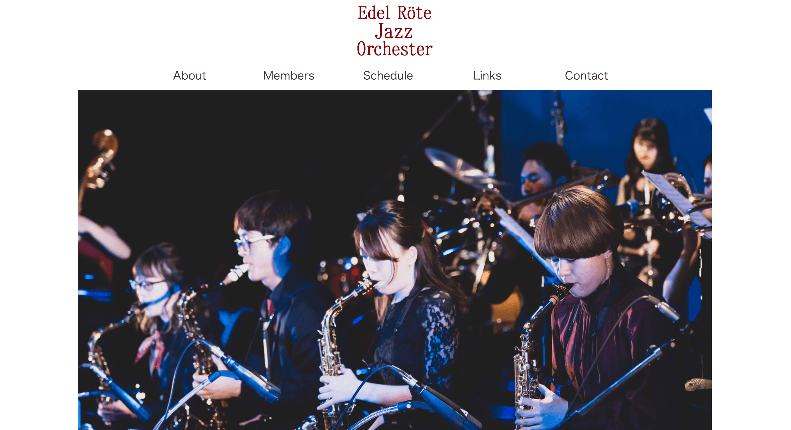
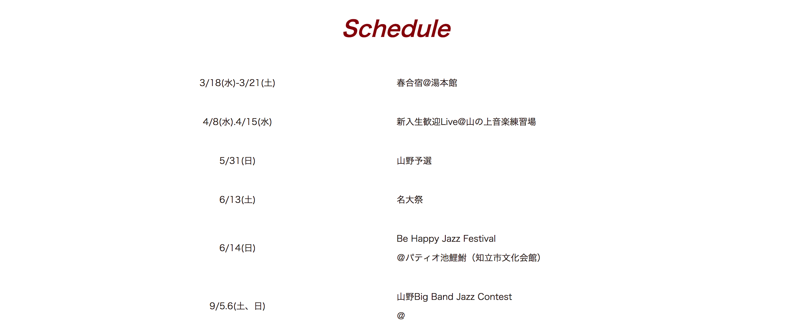
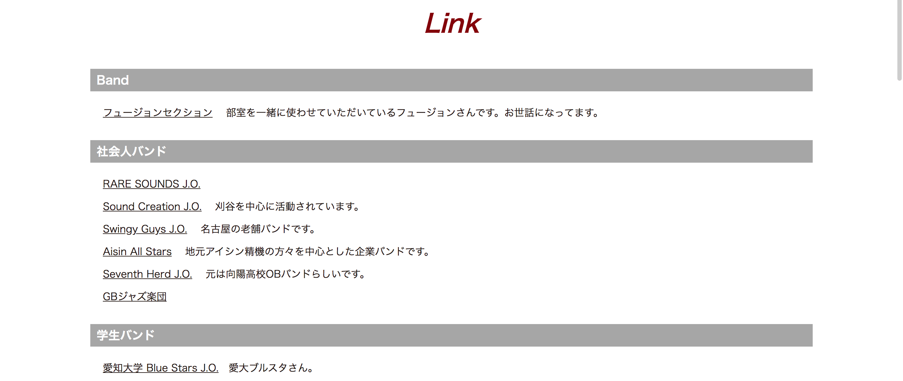
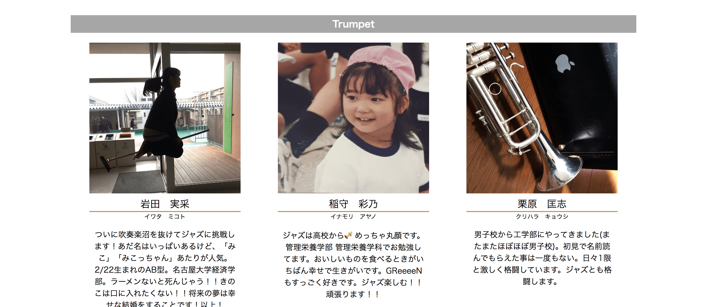

概要
私の所属する音楽サークル 名古屋大学軽音楽部ジャズセクション Edel Röte Jazz Orchesterの公式ホームページを製作しました。
期間
2019年3月1日〜3月15日 (15日間)
作品紹介
   
使用ツール
illustrator
html
css
jQuery
製作過程
きっかけ
今までもホームページはありましたが、yahoo!ジオシティーズが2019年3月末でサービスを終了したため、せっかくなら新しく作り直そう！ということでリニューアルしました。
目的
私たちの活動を知ってもらうことを目的として製作しました。
デザイン
演奏会の写真を大きく乗せることで、どんなメンバーがいるのか、どんな雰囲気で活動しているかを伝えています。
また、トップページではホームページをたくさん更新していることがわかるように更新情報、直近のスケジュール、プロフィールを載せることでサイトの離脱率を下げました。
今後の課題
現在はSEO対策ができていないためgoogleの検索順位はとても低いです。
それに加え、今年度は新型ウイルスの影響で名古屋大学の部活動が自粛されています。
新入生をターゲットに検索順位をあげて知ってもらうことが必要です。